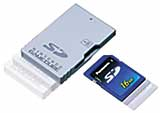
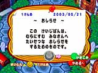

| 江口： |
これは自分から働きかけていくゲームなんです。カードにしても自分で「リーダーに通そう」と思わない限りは、ゲームのほうからのアピールはないですし。あいことばにしても、SDカードを使うことにしても、自分から「何かをしてみよう」と思ってゲームに対して働きかけたときに、おもしろみが出てくると思うんです。ひたすら受け身でプレーしたり、ゲームに対していろいろな刺激を求めてしまう人には、けっこう苦手なタイプのゲームかもしれないですね。 |
 |
| 野上： |
もともと考えていたものとしては、遊び場を作って、遊び方はそれぞれ自分たちで考えてください、というような世界だったんですよね。自由度を重視するというか。 |
|
| 江口： |
家のそばに掲示板があったりしますね。ゲームのほうからは使い方のお手本みたいな感じで、イベントのまえに多少書き込みとかあったりしますが、あとは村に住んでいる人たちで使ってくださいよ、と。村メロ掲示板もそうですね。勝手に作り替えて、ほかの住人に「あの曲なによ〜？」って言われて欲しい、とか(笑)。人と人が絡むための元ネタをあちこちに散りばめてあって、そのネタをどう使うかということをどんどん考えて欲しいですね。それをやっていくと、かめばかむほど味が出るといったおもしろさが出てくると思うんです。 |